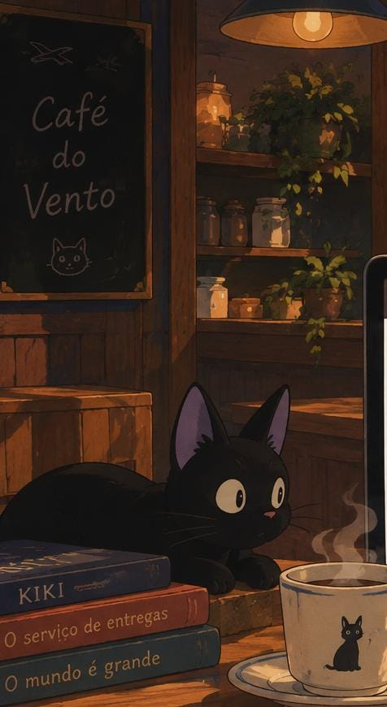

Café do Vento
Design - Identidade Visual
O Café do Vento é um projeto autoral de identidade visual que estou planejando desenvolver como uma forma de explorar direção de arte, composição e criação de uma linguagem visual própria. A proposta é imaginar uma marca de café com uma atmosfera aconchegante, fantástica e ligada à natureza.
Como vou desenvolver
O projeto começará pela construção do conceito da marca. Antes de pensar no logo, quero definir sua personalidade, sua história e a sensação que a identidade deve transmitir. A partir disso, vou reunir referências e criar um moodboard para estabelecer uma direção visual.
Depois, pretendo explorar uma paleta de cores, tipografias, formas e elementos gráficos que combinem com a proposta. Também quero trabalhar com ilustrações e texturas que tragam uma aparência mais artesanal e criem uma sensação de fantasia sem perder a clareza da identidade.
Com a identidade definida, vou desenvolver suas aplicações, como cardápio, embalagem, fachada e materiais para redes sociais. Também pretendo criar mockups para visualizar como a identidade funcionaria em diferentes situações.
A ideia é que o projeto funcione como um exercício completo de construção de identidade visual, desde o conceito inicial até suas aplicações, permitindo explorar não apenas a estética, mas também a consistência entre diferentes peças.
Tecnologias
